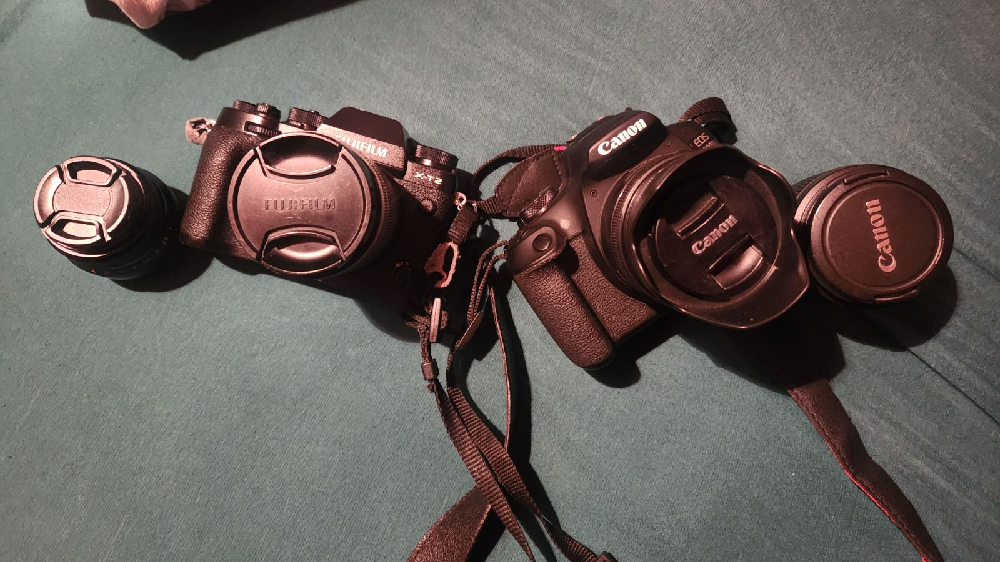
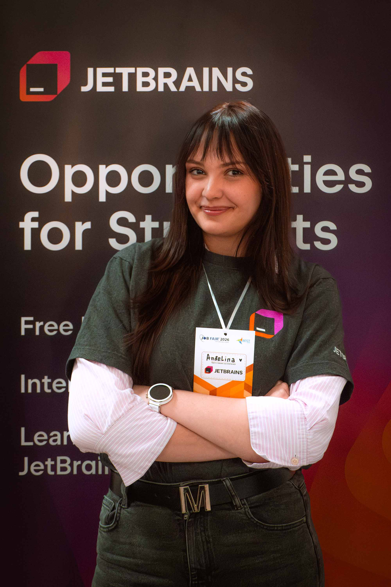
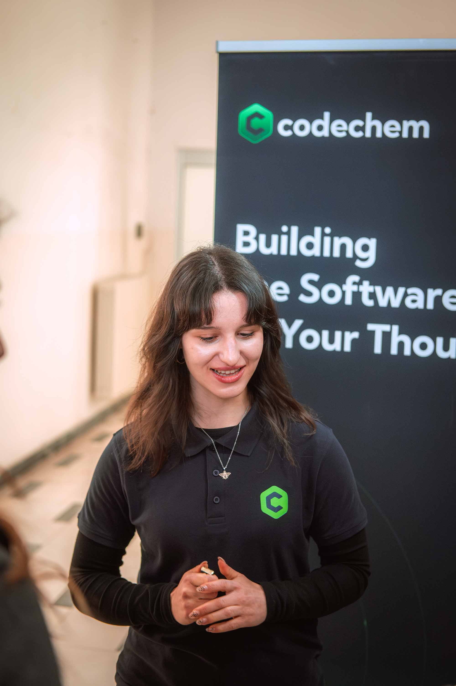
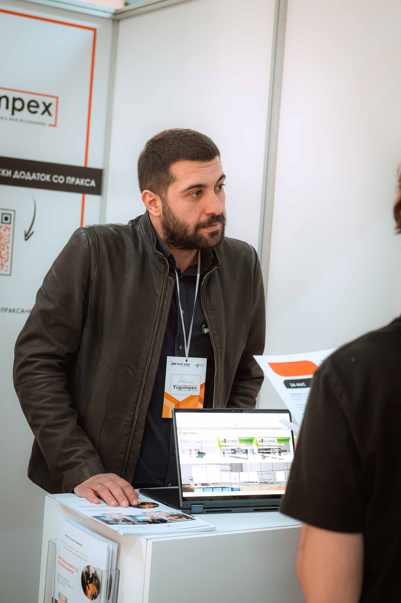
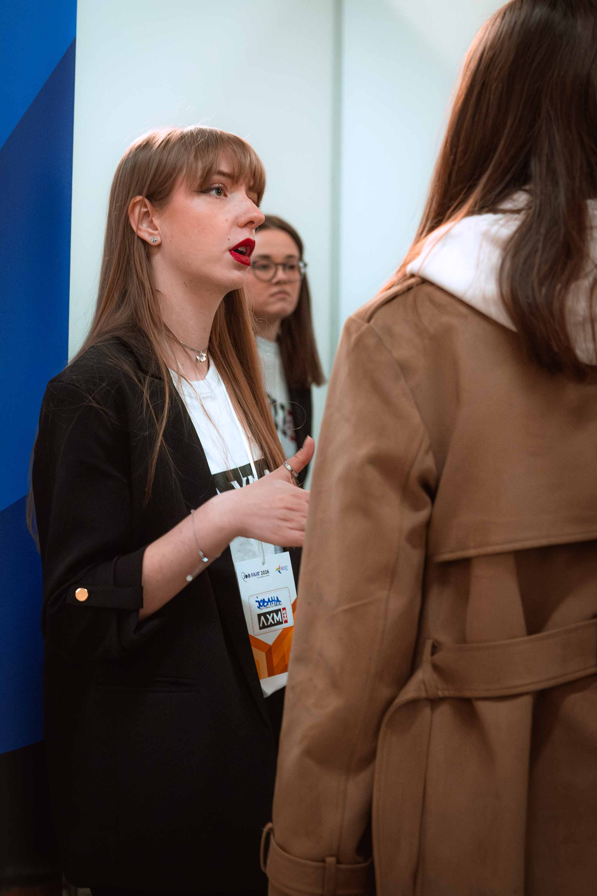
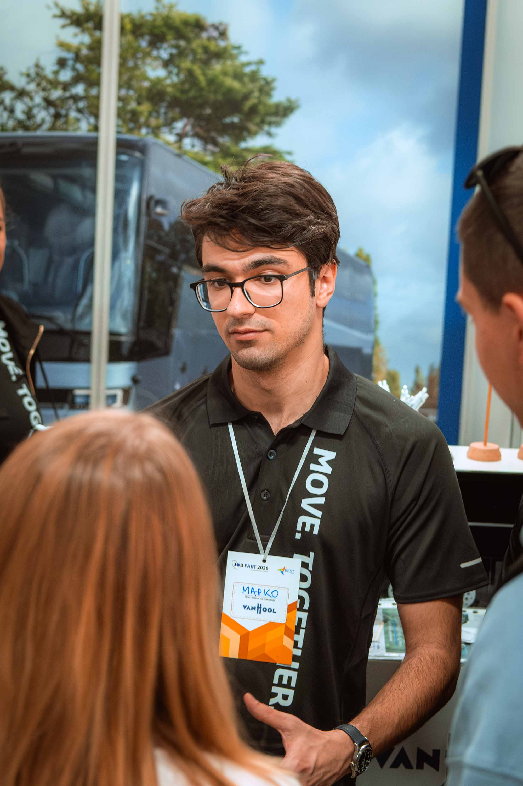
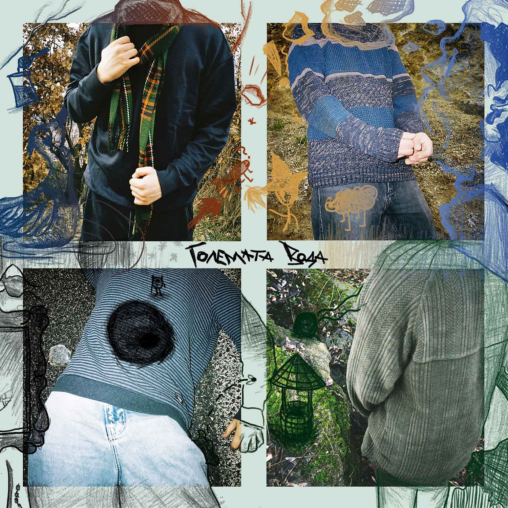

Behind the Lens
I'm a college student balancing my academic career with my love for creativity. My goals in terms of photography are simple - Capture every moment that matters and even more that don't matter, because it's those moments that people take for granted.
I also love Music, so it's no surprise I'm a huge supporter of my local bands which I've gotten really close to. Even though most of my material are concerts, that's only due to my personal lifestyle and me being around music all the time, I also shoot many Events and even Nature!

My Gear
- Fujifilm X-T2
- Fujinon XF 35mm F/2
- Fujinon XC 16-50mm F/3.5-5.6
- Canon 2000D + Gear (For Sale)

All Collaborations
Artists, venues, festivals & organisations I've worked with
Latest shoot: LoveRave Festival
Festival where I got invited to photograph a bunch of the local bands I love.
Great energy, great atmosphere and amazing performances!
There were also countless DJ's were doing their thing on another stage absolutely killing it.
Job Fair 2026, BEST Skopje
As PR&SM Responsible for Job Fair 2026, I led the full promotional campaign for the event: Video advertisements, LinkedIn Posts, Instagram Posts and I was even on TV! (3 Times)
The event itself is hosted by BEST Skopje, but the Job Fair Team are the ones that make it their own event. It was a great experience working with my team, as well as a great learning experience in terms of writing scripts, scenes, shooting and putting it all together.
Best part were the videos promoting the event as well as the advertisements I made for the sponsors who helped fund the whole project.





Golemata Voda
A band which has been with me from the very start. Not only are they an incredible band and musicians, but they're also amazing friends. If you don't know them yet, click the album cover →
